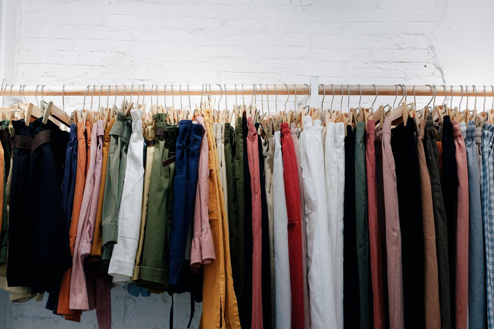

Welcome To our Cleaning Company
Phone: +1 342 422 9029 Email : info@company.com
By Ossama allaoui • 03 Jan, 2019 • 0 Comments
We’ve all heard that song by Macklemore. You know the one. In the video he’s wearing this big fur (hopefully faux) leopard print coat. If you haven’t, he basically rambles on about buying second hand clothes.
Ed Sheeran. A household name all over the world. He sings about being thrifty in his song ‘Shape of You’. Albeit then he orders an all you can eat buffet, but the logic for what I’m about to apply is the same.
So what is being thrifty? The Oxford Dictionary defines it as “The quality of using money and other resources carefully and not wastefully”. Please note those last two words – NOT wastefully.
I’m going to have a little explore as to why being thrifty can be good for our environment, but also good for you as well.Numero Uno : Clothes. The global fashion industry is worth somewhere around three trillion dollars (US). That’s quite a lot of money - 2% of the world’s Gross Domestic Product in fact (GDP– basically every good or service that is produced globally). Clothing stores are everywhere. You walk down your street or shopping centre and you see a different range varying from high class brands to op shops selling second hand garments. How many of us walk straight past these op shops and have no intention of ever setting foot in there? I reckon it’s quite a few.
The point of these op shops is to REUSE and REPURPOSE clothing. Okay, so the thought of wearing clothes that have been worn by someone else for a few years can be a bit ‘icky’ for some. But, it’s not like they aren’t washed? Besides, you can get some great finds. The majority of the stuff you buy from these stores will probably not be in your friend’s wardrobe, so think of it as being unique with your fashion.
The environmental benefits are also great. When clothing gets reused, that means less goes to massive landfills or finds its way into our waterways. I’ve put this into a simple equation for you;
Old Clothes + Recycling = Less Waste
Pretty simple hey? When we buy reused clothes, you also stay away from packaging, which in most cases comes in the form of a plastic bag (both in stores and online). Again, this means that less waste ends up in our environment.
Thought of trading clothes? We used to do it (or still do) with our Pokemon Cards, so why shouldn’t we with our clothes. There are many places where you can trade clothes with a store or even with other people. Why not do it with your friends? Maybe once a month you swap clothes to freshen up your wardrobe. By trading, you actually limit the energy used to transport new products to different shops and homes as shipping, packaging and production are all reduced.
Reused clothes are CHEAPER. How many of you complain towards the end of the month that you are running out of money? I know I do. Buying from an op shop or even a vintage shop can be a good way to save money, but still buy quality items. You just have to look around. I’ll give you an example; a brand new Ralph Lauren shirt cost way over $100 in a store. I looked in a vintage shop over the weekend and there were some for $39. That’s a massive saving! Yes, like I said they’re not brand new, but at least (probably) no one else will have them.
Number 2 : (sorry my Spanish doesn’t go further than ‘Uno’): Reusable water bottles. Ahhhh the old classic. Something everyone can do, because let’s face it; water is basically the same wherever you get it from. We know that plastic water bottles are one of the biggest contributors to plastic waste because it’s plastered all over our newsfeeds constantly. So maybe you should do something about it? In the 2017 Clean Up Australia Rubbish Report, volunteers recorded plastic being the biggest major source of rubbish, which has been the case for the last 23 years. Plastic beverage containers claimed the second spot of individual items found (behind cigarette butts). If that’s not going to get you to use a reusable bottle, then maybe the fact that it’s far cheaper for you to fill up instead of buy a bottle, might! Figures on our campaign for reusable bottles show that you may be spending up to 2000x more on bottled water per year.
Number 3 : Going naked down the fruit and veg aisle. I’d just like to clarify that I wouldn’t expect YOU to go naked down the Fruit and Veg aisle, however, I’d expect for you to pick up fruit and veg without using those single use plastic bags you find a supermarkets. They’re certainly not necessary. Fruit and veg have skin. Therefore they are protected. All you need to do is give them a quick wash and they will be fine. If you’re worried about them bruising or being damaged, clothing them with a thin plastic bag is not going to protect them (the bag will just probably find its way into our oceans and not break down for hundreds of years- feeling guilty yet?). So leave the bags alone and buy your fruit naked.
This suitably brings me on to number 4: Reusable bags. Again, the single-use plastic thing is a bit of an issue, and like I mentioned in ‘The Silence of a Nation’, every state bar NSW has committed to not using them along with some supermarkets. However, plastic bags are still used in the form of ‘bags for life’, which to be honest are probably even worse. A lot of people still use them the same way they did the single-use bags, and end up in landfill or waste in our environment. Because they are stronger, they will last a lot longer. Simple fix for this- get yourself a bag made from a different material. These are sold all over the shop (literally), and can be made out of fabrics such as jute. They last a lot longer and are far better for the environment. You also only have to pay for them once! Check out our plastic bag campaign HERE. #banthebag
Number 5 : ‘Meatless Monday’ (or any day you fancy). So this next one may be a bit controversial, and I’m definitely not preaching to you about being vegetarian, because I love a burger on the BBQ just as much as the next meat eater. However, going ‘Meatless’ for even one day a week would certainly benefit the environment. Replacing meat with fresh veg will definitely save on packaging (because you’re already not using the single-use plastic bags for your fruit and veg, remember?). It also means that you won’t be spending a fortune every night on having meat on your plate. The atmosphere also benefits. As demand for meat drops, greenhouse gases such as methane and carbon dioxide reduce because less animals are creating waste (let’s call it ‘passing wind’).
Number 6 : Grow your own food. So this one may not be applicable to everyone. I understand that there’s usually not much access to a garden or veggie patch for most people. However, if you do, why not grow your own? You may have to spend a little bit of money to get your veggie patch sorted with the right seeds etc, but it really is a great way to help the environment. Even if you don’t have much space, how about little pots with lettuce, beans or a tomato plant in? These are great for kids and usually grow quickly. Think about it; there’s no waste from packaging, little to no energy needed for transport and if you grow your veg organically, you won’t use any harmful chemicals in the form of fertilisers which would be detrimental to the soil. You’ll also save money in the long run, and can even sell on surplus stock (or give it away if you’re feeling nice).
I know that not all of these are realistic for everyone. But changing your habits slightly to be thriftier (not wasteful) would not only really benefit our environment, but also your bank account. Most suggestions show that if you try to be environmentally friendly, you also save money. To me it’s a no brainer.
Plus, you can always give yourself the nickname ‘Thrifty Cent’.
By Oliver Emanuel
Youth Project Officer
(A.K.A Thrifty Cent)